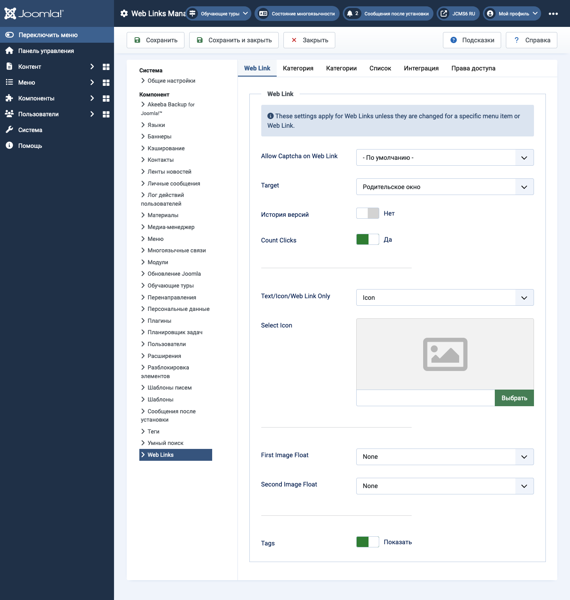

Joomla Help Screens
Параметры веб-ссылок
Описание¶
Конфигурация параметров веб-ссылок позволяет настроить параметры, которые используются глобально для всех пунктов меню веб-ссылок.
Общие элементы¶
Некоторые элементы этой страницы рассматриваются в отдельных статьях справки:
Как получить доступ¶
- Выберите Components -> Weblinks -> Links в меню Администратора. Затем...
- Выберите кнопку Options на панели инструментов.
Скриншот¶

Вкладка "Веб-ссылка"¶
- Разрешить Captcha на веб-ссылке Выберите плагин капчи, который будет использоваться в форме отправки веб-ссылки. Возможно, вам потребуется ввести необходимую информацию для вашего плагина капчи в менеджере плагинов. Если выбрано "Использовать по умолчанию", убедитесь, что плагин капчи выбран в глобальной конфигурации.
- Цель Окно браузера, которое открывается при выборе ссылки.
- Подсчет кликов Если Да, будет записываться количество нажатий на ссылку.
- Текст/Иконка/Только веб-ссылка Показывает текст, иконку или ничего с веб-ссылкой. По умолчанию – Иконка.
- Выбрать иконку Это позволяет вам выбрать файл изображения, чтобы использовать его в качестве иконки по умолчанию для веб-ссылок. Когда вы нажимаете кнопку "Выбрать", открывается модальное окно, которое позволяет просматривать файлы изображений на вашем сайте.
- Выравнивание изображения Где отображать изображение на странице.
- Показать теги Показать или скрыть теги фида.
Вкладка "Категория"¶
Настройки категории контролируют, как будут отображаться веб-ссылки, когда вы переходите к веб-ссылкам для просмотра их ссылок.
- Выбор макета Выберите макет по умолчанию, который будет показываться при нажатии на ссылку категории. Если вы создаете альтернативный макет для категории, вы можете выбрать его по умолчанию.
- Заголовок категории Показывать или скрывать заголовок категории.
- Описание категории Показывать или скрывать описание категории.
- Изображение категории Показывать или скрывать изображение категории.
- Уровни подкатегорий Сколько уровней подкатегорий показывать при отображении просмотра категории.
- Пустые категории Показывать или скрывать категории, которые не содержат элементов или подкатегорий.
- Описания подкатегорий Показывать или скрывать описания для показанных подкатегорий.
- # Веб-ссылки Показывать или скрывать количество веб-ссылок в каждой категории.
- Показать теги Показывать или скрывать теги для одной категории.
Вкладка "Категории"¶
Эти настройки применяются для опций категорий веб-ссылок, если они не изменены для конкретного пункта меню.
- Описание верхнего уровня категории Показывать или скрывать описание категории верхнего уровня.
- Уровни подкатегории Сколько уровней в иерархии показывать.
- Пустые категории Показывать или скрывать категории, которые не содержат элементов и подкатегорий.
- Описания подкатегорий Показывать или скрывать описание каждой подкатегории.
- # Веб-ссылки Показывать или скрывать количество веб-ссылок в каждой категории.
Вкладка "Макеты списка"¶
Эти настройки применяются для опций списка веб-ссылок, если они не изменены для конкретного пункта меню.
-
Поле фильтра Поле фильтра создает текстовое поле, где пользователь может ввести значение, чтобы отфильтровать веб-ссылки, показанные в списке.
- Скрыть: Не показывать поле фильтра.
- Заголовок: Фильтр по заголовку веб-ссылки.
- Автор: Фильтр по имени автора.
- Хиты: Фильтр по количеству веб-ссылок.
- Выбор отображения Показать или скрыть управление выбором отображения #, которое позволяет пользователю выбирать количество элементов для показа в списке.
- Заголовки таблицы Показать или скрыть заголовок над таблицей веб-ссылок.
- Описание ссылок Показывать или скрывать описание веб-ссылки.
- Хиты Скрыть или показать количество раз, когда данная веб-ссылка была доступна.
Вкладка "Интеграция"¶
Эти настройки определяют, как компонент веб-ссылок будет интегрироваться с другими расширениями.
- Ссылка RSS-фида Показать или скрыть URL-адреса ссылок фида. Ссылка на фид будет отображаться как иконка фида в адресной строке большинства браузеров.
- Удалить ID из URL Да или Нет.
- Редактировать пользовательские поля Да или Нет.
Советы¶
- Если вы начинающий пользователь, вы можете оставлять значения по умолчанию здесь, пока не узнаете больше о использовании глобальных опций.
- Если вы опытный пользователь, вы можете сэкономить время, создав здесь хорошие значения по умолчанию. Когда вы настраиваете элементы меню и создаете веб-ссылки, вы сможете принять значения по умолчанию для большинства опций.
- Все значения, установленные здесь, могут быть изменены на уровне элемента меню, категории или веб-ссылки.
Переведено с помощью openai.com